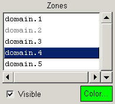
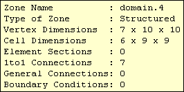

The zone list is filled in when the CGNS base is selected. For each zone, CGNSplot will build a list of regions which consist of the exterior faces of the zone mesh, surface elements, and connectivities and boundary conditions which lie on the exterior faces. When a zone is selected, the Region List will be filled in with the regions for that zone.
The visibility of the entire zone may be controlled with the Visible button. If off, then none of the regions in the zone will be visible, regardless of their individual visibility state. If on, then the region visibility is used. The zone visibility state may be toggled by double-clicking Mouse Button 1 on the zone name. If the zone visibility is on, the zone name will be black, otherwise it will be gray.
The Color button shows the current color for the zone, which is initially the color for all the regions in the zone. Clicking on the Color button will bring up a color selection panel to allow changing the zone color - which in turn changes all the region colors for the zone.
Clicking Mouse Button-3 on a zone name will pop-up a window similar to the one below, listing the properties of the zone.
